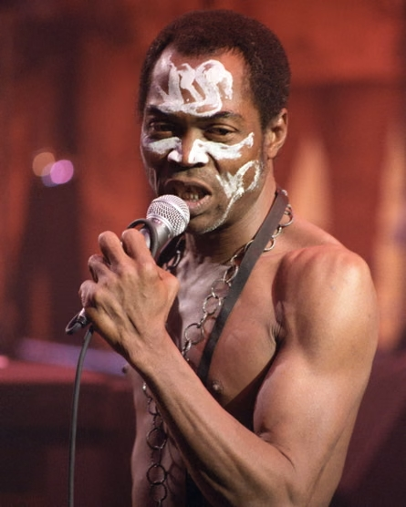
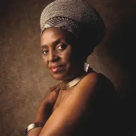

A Brief History of African Music
Music in Africa is more than just entertainment; it's a fundamental part of life, deeply interwoven with social, religious, and political aspects of society. Its history is vast and diverse, mirroring the continent's countless cultures. Traditionally, music was functional, serving a purpose in ceremonies, rituals, and daily tasks. Oral tradition was key, with stories, history, and values passed down through songs.
Musical instruments are equally diverse, ranging from percussion instruments like drums (djembe, talking drums), xylophones (balafon), and rattles, to string instruments like the kora and mbira. The music itself is often characterized by its polyrhythms (the simultaneous use of two or more contrasting rhythms), call-and-response patterns, and improvisational elements).
The 20th century saw a massive evolution. The influence of Western genres like jazz and blues, which themselves have African roots, led to the creation of new sounds. Highlife from Ghana and Nigeria, soukous from the Congo, and Jùjú music from Nigeria all emerged, blending traditional rhythms with modern instrumentation like electric guitars and horns. In recent decades, a new wave of artists has brought African music to a global stage, with genres like Afrobeats and Amapiano gaining international popularity.
Top 5 African Music Legends
- Fela Kuti - Pioneer of Afrobeat
- Miriam Makeba - South African Civil Rights Activist and Singer
- King Sunny Ade - King of Juju Music
- Youssou N'Dour - Senegalese Singer and Activist
- Salif Keita - The Golden Voice of Africa
Top 2 Legends: A Closer Look
- Fela Kuti
-

Fela Kuti was a Nigerian multi-instrumentalist, bandleader, and political firebrand. He's widely regarded as the pioneer of Afrobeat, a genre that fuses traditional Yoruba music, jazz, funk, and highlife. Fela used his music as a powerful tool for social and political commentary. Listen to his melodious music below:
- Miriam Makeba
-

Known as "Mama Africa," Miriam Makeba was a South African singer and civil rights activist. Her music blended traditional Xhosa and Zulu melodies with jazz and folk. Makeba's powerful vocals and magnetic stage presence made her a global icon. Listen to her iconic songs below:
The New Wave: African Popular Musicians Making Global Impact
The global popularity of African music has exploded over the last decade, primarily fueled by genres like Afrobeats. A new wave of artists has used the internet and streaming to reach a worldwide audience, often collaborating with Western stars and selling out major venues. Their sound is a dynamic mix of traditional African rhythms and modern influences like pop, R&B, and Amapiano.
Top 5 New Wave Artists
| Name | Musical Name | Country | Hit Songs |
|---|---|---|---|
| Damini Ebunoluwa Ogulu | Burna Boy | Nigeria | "Last Last," "Ye" |
| Temilade Openiyi | Tems | Nigeria | "Free Mind," "Essence" (Wizkid feat. Tems) |
| Tyla Laura Seethal | Tyla | South Africa | "Water," "Truth or Dare" |
| Divine Ikubor | Rema | Nigeria | "Calm Down," "Dumebi" |
| Fredrick Mwakalebela | Diamond Platnumz | Tanzania | "African Beauty," "Marry You" |
| Artists shaping the new era of African music. | |||
Contact Us: Fan Submission Form
Alternatively, you can fill out the contact form below to submit your favorite artist or give us feedback. We will get back to you as soon as possible.